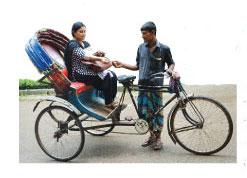

অধ্যায় ৭
কাজের মর্যাদা
১. শ্রমজীবী
সমাজের নানা প্রয়োজনে বিভিন্ন ধরনের পেশার মানুষ রয়েছে। প্রত্যেক পেশার মানুষ শ্রম দিয়ে থাকেন। এই শ্রমজীবীগণ আমাদের দৈনন্দিন জীবনযাপনে সাহায্য করে। তাই সব ধরনের পেশাকে আমাদের মর্যাদা দিতে হবে। এই অধ্যায়ের শুরুতে আমরা বিভিন্ন শ্রমজীবীর পেশা সম্পর্কে জানব।
কারখানার শ্রমিক
পাশের ছবিতে একটি কারখানায় পোশাক শ্রমিকদের দেখা যাচ্ছে। তারা দীর্ঘ সময় কাজ করে রপ্তানির জন্য পোশাক তৈরি করেন। এটি আমাদের একটি অন্যতম গুরুত্বপূর্ণ শিল্প।
পরিচ্ছন্নতাকর্মী
পরিচ্ছন্নতাকর্মীগণ বিদ্যালয়, অফিস, হাসপাতাল এবং রাস্তা পরিষ্কার করে পরিবেশ পরিচ্ছন্ন ও নিরাপদ রাখেন।
পরিবহন শ্রমিক
এন স্থান থেকে অন্য স্থানে চলাচলের জন্য এবং মালামাল পরিবহনের জন্য আমরা যানবাহন ব্যবহার করি। যেমন নৌকা, রিকশা, বাস, রেলগাড়ি, ট্রাক এবং ট্যাক্সি। এ সকল যানবাহনের জন্য চালকের প্রয়োজন। এই পেশাগুলোর সাথে জড়িত লোকজন হলো পরিবহন শ্রমিক।

ক । এসো বলি
তোমার এলাকায় কর্মরত শ্রমিকদের নিয়ে শিক্ষকের সহায়তা শ্রেণিতে আলোচনা কর।
-
তারা কী ধরনের কাজ করছেন : বহন, নির্মাণ বা অন্য কিছু?
-
কোন কোন কাজে পুরুষের সাথে নারীরাও অংশগ্রহণ করেন?
-
এই পেশাগুলো আমাদের জন্য কেন প্রয়োজন?
খ । এসো লিখি
নিচের ছকের পেশাগুলো সম্পর্কে আলোচনা কর। তারা কোথায় এবং কী কাজ করেন তা লেখ। এ ধরনের আরও একটি পেশা সম্পর্কে লেখ। কাজিটি জোড়ায় কর।
|
পেশা |
কাজের স্থান |
কাজের ফলাফল |
|
কারখানা শ্রমিক |
- |
- |
|
পরিচ্ছন্নতাকর্মী |
- |
- |
|
পরিবহন শ্রমিক |
- |
- |
|
- |
- |
- |
গ । আরও কিছু করি
কয়েকটি দলে ভাগ হয়ে যাও। প্রতিটি দল চিন্তা করে বের কর, কোন পেশায় কাজ করা সবচেয়ে কঠিন। এরপর তা শ্রেণিতে উপস্থাপন কর কোন দলটি সবচেয়ে ভালো উপস্থাপন করেছে, সকলে মিলে তা নির্বাচন কর।
ঘ । যাচাই করি
বাক্যটি সম্পূর্ণ কর :
আমাদের শ্রমিকদের সম্মান করা উচিত কারণ …………………..।
৩৪২ চাকুরিজীবী
এ ধরনের পেশার সাথে যারা জড়িত তারা সাধারণত অফিসে কাজ করেন।
অফিস কর্মী
একজন অফিস কর্মী সাধারণত অফিসে বিভিন্ন ধরনের কাজ করেন। মানুষের বিভিন্ন প্রয়োজনে তথ্য সরবরাহ করে সাহায্য করেন। অফিসের নানা কাজে তারা প্রয়োজনে কম্পিউটার ও ইন্টারনেট ব্যবহার করে থাকেন।
ব্যবসায়ী ও বিক্রয় ব্যবস্থাপনা
ব্যবসায়ীরা পণ্য বেচাকেনার সাথে জড়িত। স্থানীয়ভাবে আমরা দেখি ব্যবসায়ীরা দোকানে বা মার্কেটে পণ্য ক্রয়-বিক্রয় করেন। এছাড়াও তারা পণ্য আমদানি ও রপ্তানি করেন।
অন্যান্য পেশাজীবী
আমাদের সমাজে এছাড়াও আরও অনেক গুরুত্বপূর্ণ পেশা আছে। যেমন, শিক্ষক আমাদের শিক্ষাদান করেন। প্রকৌশলী দালান, সড়ক ও সেতু তৈরি করেন। ফার্মাসিস্ট আমাদের সুস্থ রাখতে ওষুধ তৈরি করেন। ডাক্তার আমাদের চিকিৎসা সেবা দান করেন।
৩৫ক । এসো বলি
কী কী পেশাগত কাজ সম্পর্কে তুমি জান তা শিক্ষকের সাথে আলোচনা কর।
-
এসব পেশার মানুষ কাজের সময় কি বিশেষ কোনো পোশাক পরেন?
-
তারা কি কম্পিউটারে কাজ করেন?
-
এসব পেশায় কাজ করতে তাদের কোনো বিশেষ পরীক্ষা দিতে হয়?
খ । এসো লিখি
নিচের দেওয়া প্রতিষ্ঠানগুলোতে কোন কোন পেশাজীবী কাজ করেন তা লেখ।
কাজটি জোড়ায় কর।
|
বিদ্যালয় |
হাসপাতাল |
অফিস |
|
- |
- |
- |
|
- |
- |
- |
|
- |
- |
- |
|
- |
- |
- |
গ । আরও কিছু করি
তুমি বড় হয়ে কোন পেশা বেছে নিতে চাও?
তোমার বাছাই করা পেশায় কাজ করতে কী কী যোগ্যতা লাগবে?
তোমার বাছাই করা পেশায় তুমি কোথায় কাজ করবে?
ঘ । যাচাই করি
কর্মস্থলের সাথে বিভিন্ন পেশার মিল কর।
| ডাক্তার বিক্রেতা ব্যবস্থাপক শিক্ষক বিজ্ঞানী | দোকান বিদ্যালয় গবেষণাগার হাসপাতাল অফিস |
৩ আইন শৃঙ্খলা রক্ষায় নিয়োজিত পেশা
সমাজের শান্তি-শৃঙ্খলা বজায় রাখতে প্রত্যেক নাগরিককে আইন মেনে চলতে হয়। কেউ আইন অমান্য করে অপরাধমূলক কাজ করলে বিচারের সম্মুখীন হতে হয়। আইন রক্ষার সাথে জড়িত বিভিন্ন পেশা সম্বন্ধে এখানে আলোচনা করা হলো।
পুলিশ
দেশের আইন–শৃঙ্খলা রক্ষায় পুলিশবাহিনী কাজ করেন। অপরাধীকে ধরে বিচারের সম্মুখীন করা তাদের প্রধান দায়িত্ব। ট্রাফিক পুলিশ শহরে সুষ্ঠুভাবে যানবাহন চলাচলে গুরুত্বপূর্ণ ভূমিকা পালন করেন। নিরাপদ চলাচলে তারা মানুষকে সাহায্য করেন।
আইনজীবী
বিচার কাজে আইনজীবীরা গুরুত্বপূর্ণ ভূমিকা রাখেন। তারা জনগণকে আইনি সহায়তা প্রদান করেন। বিচারের সম্মুখীন অভিযুক্ত ব্যক্তিদের পক্ষে আদালতে মামলা পরিচালনা করেন। আইনের ব্যাখ্যা দিয়ে তারা আদালতকে সাহায্য করেন।
বিচারক
যারা আইন অমান্য করেন, অপরাধমূলক কাজ করেন এবং সমাজের শান্তি শৃঙ্খলা বিনষ্ট করেন, পুলিশ তাদের ধরে বিচারের সম্মুখীন করেন। বিচারক বাদী এবং বিবাদী উভয় পক্ষের কথা শোনেন। তারা বিজ্ঞতা ও বিচক্ষণতার মাধ্যমে দোষীদের শনাক্ত করেন এবং আইন অনুযায়ী শাস্তি প্রদান করেন।
৩৭ক । এসো বলি
পুলিশ সম্পর্কে নিচের প্রশ্নগুলো শিক্ষকের সহায়তায় শ্রেণিতে আলোচনা কর।
-
তারা কী ধরনের পোশাক পরেন।
-
তারা কী ধরনের কাজ করেন।
-
পুলিশে কাজ করতে হলে তোমাকে কী ধরনের মূল্যবোধ অর্জন করতে হবে?
খ । এসো লিখি
কেউ যদি দোকানে চুরি করতে গিয়ে ধরা পড়েন তবে পুলিশ, আইনজীবী ও বিচারকের ভূমিকা কী হবে? নিচের ছকে লেখ।
|
পুশিল |
- |
|
আইনজীবী |
- |
|
বিচারক |
- |
গ । আরও কিছু করি
‘এসো লিখি’–তে উল্লিখিত ঘটনাটি অভিনয় কর। একজন অপরাধী, একজন আসামিপক্ষের আইনজীবী, একজন আসামির বিপক্ষের আইনজীবী এবং একজন বিচারকের ভূমিকায় অভিনয় কর। প্রতিটি পক্ষ, আদালতে কী কী স্বাক্ষ্য প্রদান ও যুক্তি দিলেন লেখ।
ঘ । যাচাই করি
বাক্যটি সম্পূর্ণ কর :
আইন পেশায় আমাদের এমন মানুষ দরকার যেন ……...................................
৩৮